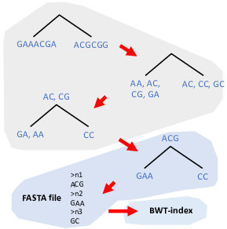

Welcome to ProPhyle
ProPhyle brings metagenomic classification from clusters to laptops. This is possible thanks to a novel indexing strategy, based on the bottom-up propagation of k-mers in the phylogenetic/taxonomic tree, assembling contigs at each node and matching using a full-text search.
Compared to other state-of-the-art classifiers, ProPhyle provides several unique features: 
- Low memory requirements. Compared to Kraken, ProPhyle has 7x smaller memory footprint for index construction and 5x smaller footprint for querying, while providing a more expressive index.
- Flexibility. ProPhyle is easy to use with any user-provided phylogenetic trees and reference genomics sequences (e.g., reads or assemblies). It can classify short reads, long reads, or even assembled contigs.
- Standard bioinformatics formats. Newick/NHX is used for representing phylogenetic trees and SAM/BAM for reporting assignments.
- Lossless k-mer indexing. ProPhyle stores a list of all genomes containing a k-mer. The classification is, therefore, accurate even with trees containing similar genomes (e.g, phylogenetic trees for a single species).
- Reproducibility. ProPhyle is fully deterministic, with a mathematically well-defined behavior. Databases are versioned and distributed via Zenodo.
Documentation
|
Quick example |
Contents |
Search page |
Releases
|
Auxiliary tools
|
ProPhyle Index |
ProPhyle Assembler |
Cite
[1] Břinda K, Salikhov K, Pignotti S, Kucherov G. ProPhyle 0.3.1.0, Zenodo, 2017. doi:10.5281/zenodo.1045429.
[2] Břinda K, Salikhov K, Pignotti S, Kucherov G. ProPhyle: a phylogeny-based metagenomic classifier using the Burrows-Wheeler Transform. Poster at HiTSeq 2017. doi:10.5281/zenodo.1045427
[3] Břinda K. Novel computational techniques for mapping and classifying Next-Generation Sequencing data. PhD Thesis, Université Paris-Est, 2016. doi:10.5281/zenodo.1045317
[4] Salikhov K. Efficient algorithms and data structures for indexing DNA sequence data. PhD Thesis, Université Paris-Est, 2017.
[1] is the main reference for the entire ProPhyle package. [2] contains a summary of the ProPhyle algorithm, [3] provides a thorough description (see Chapter 12), and [4] explains details of the BWT-indexing technique.
Authors
- Karel Břinda <kbrinda@hsph.harvard.edu>
- Kamil Salikhov <kamil.salikhov@univ-mlv.fr>
- Simone Pignotti <pignottisimone@gmail.com>
- Gregory Kucherov <gregory.kucherov@univ-mlv.fr>